Visualization Gallery¶
TorchSOM ships a visualization suite that turns a trained map into figures you can
read. Every plot is produced by the SOMVisualizer
class and works for both rectangular and hexagonal topologies.
This page is the practical companion to the paper: it walks through each visualization type with runnable code, an example figure, and notes on how to read it.
The seven visualization types¶
TorchSOM groups its plots into seven types, spanning unsupervised structure, supervised target landscapes, and clustering model selection:
# |
Type |
Setting |
What it shows |
|---|---|---|---|
1 |
U-matrix (distance map) |
Unsupervised |
Inter-neuron distances; reveals cluster boundaries |
2 |
Hit map |
Unsupervised |
BMU activation frequency and data density |
3 |
Component planes |
Unsupervised |
Per-feature weight distribution across the grid |
4 |
Classification & metric maps |
Supervised |
Dominant class, or mean/std of a target, per neuron |
5 |
Score & rank maps |
Supervised |
Per-neuron reliability for regression |
6 |
Training curve |
Unsupervised |
QE and TE convergence during training |
7 |
Clustering maps |
Unsupervised |
Cluster assignment plus elbow, silhouette, and comparison diagnostics |
The numbered subsections below follow a natural workflow rather than this table’s order.
Setup¶
All examples reuse the SOM and the BMU map built here. Train once, then build the
bmus_data map a single time and pass it to every supervised plot:
import torch
from sklearn.datasets import load_iris
from sklearn.preprocessing import StandardScaler
from torchsom import SOM, SOMVisualizer
# 1. Load and standardise the data
bunch = load_iris()
features = torch.tensor(
StandardScaler().fit_transform(bunch.data), dtype=torch.float32
)
targets = torch.tensor(bunch.target, dtype=torch.long)
feature_names = list(bunch.feature_names)
# 2. Train a SOM
som = SOM(
x=25,
y=15,
num_features=features.shape[1],
epochs=100,
batch_size=16,
topology="rectangular",
initialization_mode="pca",
random_seed=42,
)
som.initialize_weights(data=features, mode=som.initialization_mode)
q_errors, t_errors = som.fit(data=features)
# 3. Pre-compute the BMU -> sample-indices map ONCE and reuse it
bmus_map = som.build_map("bmus_data", data=features)
# 4. Create a visualizer (the topology is inferred from the SOM)
viz = SOMVisualizer(som=som)
Tip
Pass save_path="some/folder" to any plot_* method to write a file instead
of opening an interactive window. The file name is taken from each method’s
fig_name argument and the format from VisualizationConfig.save_format.
Customizing the output¶
VisualizationConfig controls styling. Pass an
instance to the visualizer:
from torchsom import SOMVisualizer
from torchsom.visualization import VisualizationConfig
config = VisualizationConfig(
figsize=(12, 8), # figure size in inches
fontsize={"title": 16, "axis": 13, "legend": 11},
fontweight={"title": "bold", "axis": "normal", "legend": "normal"},
cmap="viridis", # default colormap
dpi=300, # resolution for saved figures
grid_alpha=0.3, # grid transparency
colorbar_pad=0.01, # colorbar padding
save_format="png", # png, pdf, eps, or svg
hex_radius=0.5, # hexagon radius (hexagonal topology)
hex_border_color="black",
hex_border_width=0.3,
)
viz = SOMVisualizer(som=som, config=config)
1. Training curve¶
Plots quantization error (QE) and topographic error (TE) per epoch. This is the first thing to check after training.
viz.plot_training_errors(
quantization_errors=q_errors,
topographic_errors=t_errors,
)
{kind=link}
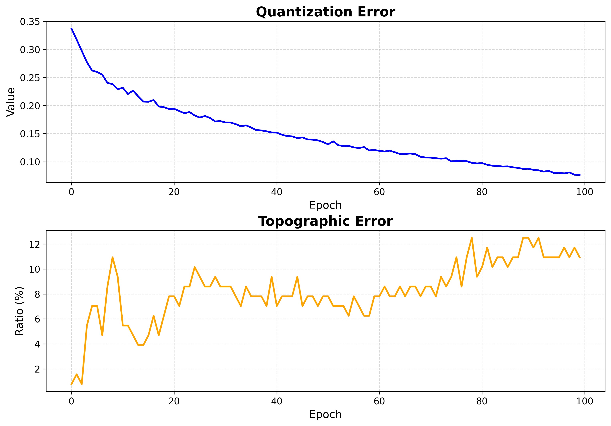
How to read it:
QE measures how well neurons represent the data (lower is better).
TE measures topology preservation (lower is better).
Both should fall and then flatten. A curve that is still dropping at the last epoch means training was too short.
2. U-matrix (distance map)¶
The unified distance matrix shows, for each neuron, the average distance to its grid neighbors. Ridges of large distance separate clusters.
viz.plot_distance_map(
distance_metric=som.distance_fn_name,
neighborhood_order=som.neighborhood_order,
scaling="sum",
)
{kind=link}
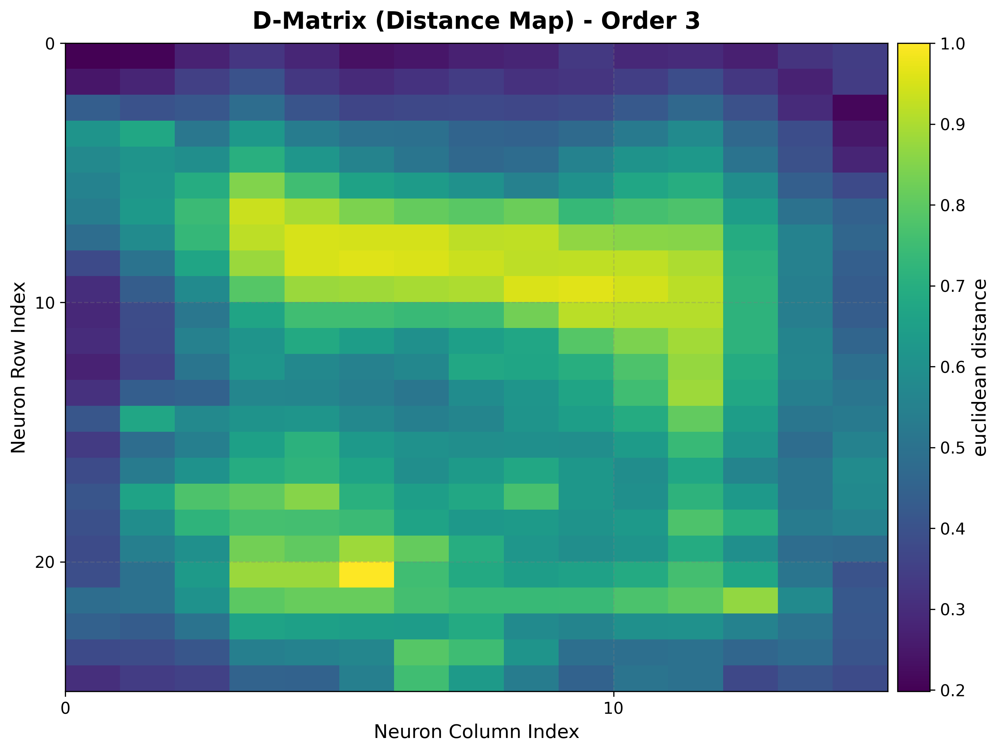
How to read it:
Light ridges = large inter-neuron distance = cluster boundaries.
Dark basins = similar neighbors = the interior of a cluster.
Works identically on rectangular and hexagonal grids.
3. Hit map¶
Counts how often each neuron is selected as the BMU, exposing where the data concentrates and which neurons are unused (“dead”).
viz.plot_hit_map(data=features)
{kind=link}
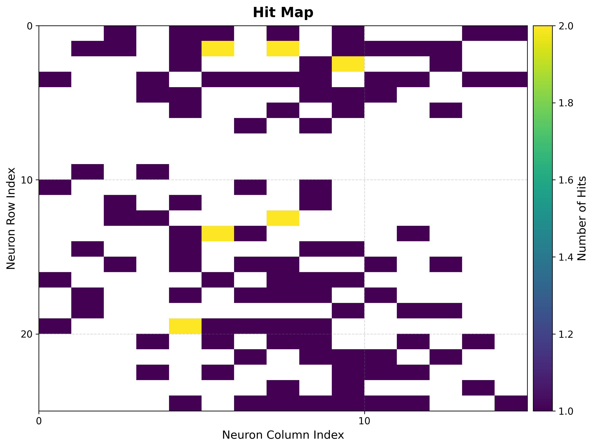
How to read it:
Bright cells = frequently activated neurons = dense regions of the input space.
Empty cells = rarely or never activated. A large empty border often means the map is bigger than the data needs.
4. Component planes¶
One heat map per input feature, showing how that feature’s weight varies across the grid. Comparing planes reveals correlations and gradients.
viz.plot_component_planes(component_names=feature_names)
{kind=link}
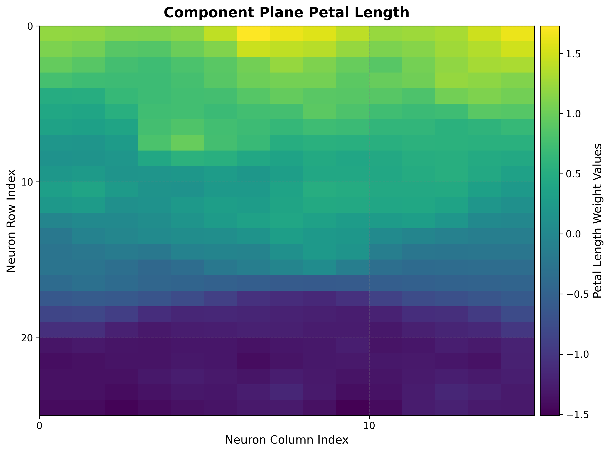
How to read it:
Each plane uses the same grid layout, so regions that are bright in two planes indicate features that co-vary.
Smooth gradients indicate good topology preservation for that feature.
Supervised maps¶
The next two groups use a target vector aligned with the input data. They rely
on the pre-computed bmus_map from Setup.
5a. Classification map¶
For classification targets, shows the dominant class assigned to each neuron.
viz.plot_classification_map(
bmus_data_map=bmus_map,
data=features,
target=targets,
neighborhood_order=som.neighborhood_order,
)
{kind=link}
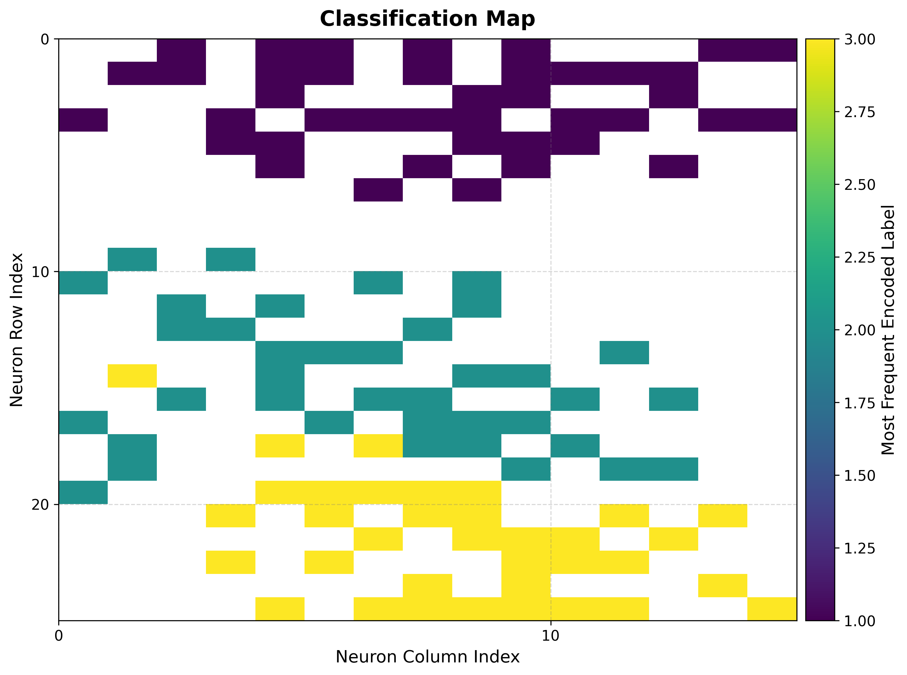
How to read it:
Each color is a class; contiguous regions of one color show the map has organized that class into a coherent territory.
Boundaries between colors are decision boundaries learned without supervision.
5b. Metric maps (mean / std)¶
For regression targets, summarize the target values that land on each neuron.
reduction_parameter selects the statistic.
# Mean target value per neuron
viz.plot_metric_map(
bmus_data_map=bmus_map,
data=features,
target=targets,
reduction_parameter="mean",
)
# Spread of target values per neuron
viz.plot_metric_map(
bmus_data_map=bmus_map,
data=features,
target=targets,
reduction_parameter="std",
)
{kind=link}
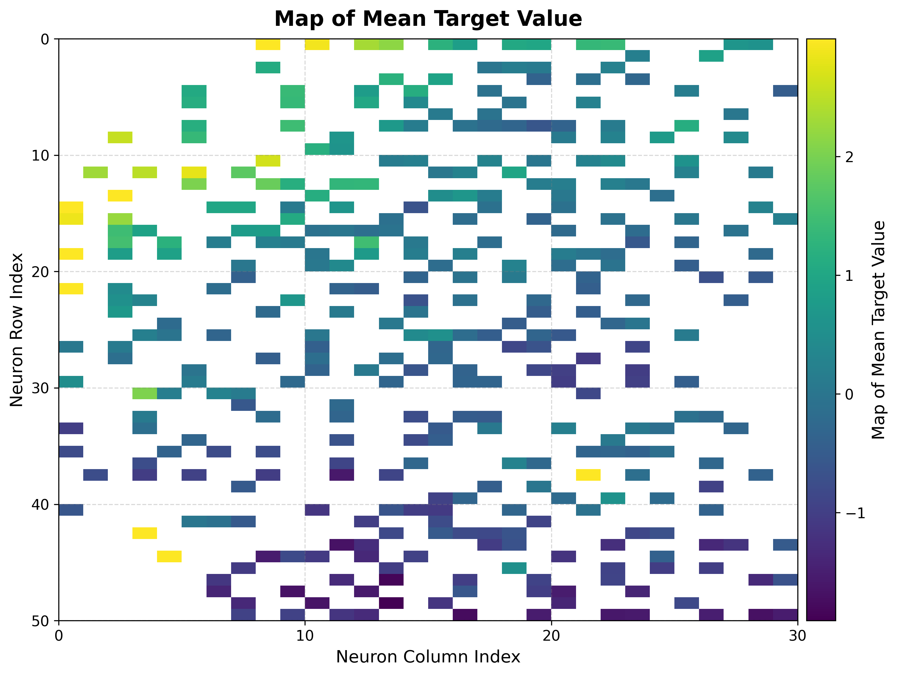
How to read it:
The mean map is a smooth regression surface over the topology; gradients show how the target changes across the input space.
The std map flags neurons with inconsistent targets — high values mark unreliable regions for prediction.
6. Score & rank maps¶
These rank neurons by how trustworthy their target estimates are, complementing the global QE/TE numbers with a per-neuron reliability view.
Score map¶
viz.plot_score_map(
bmus_data_map=bmus_map,
target=targets,
total_samples=features.shape[0],
)
{kind=link}
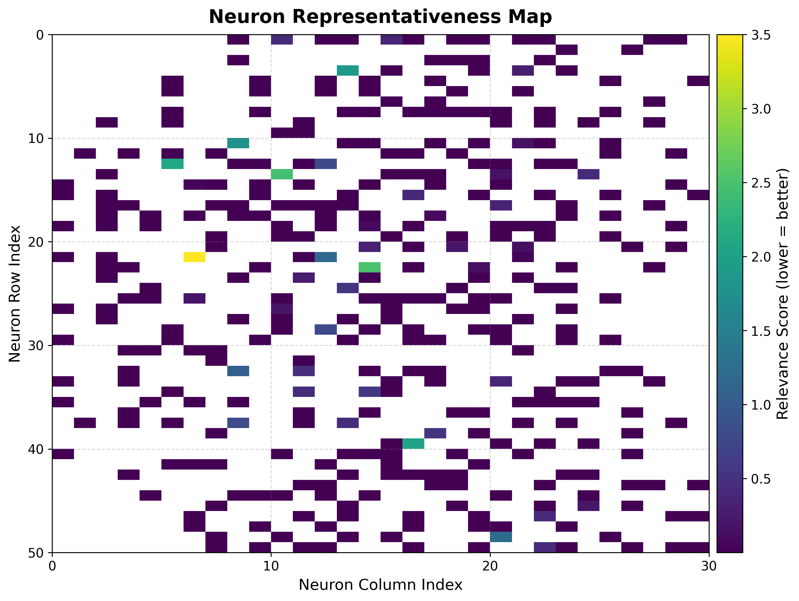
The score balances local spread, sample count, and statistical significance:
where \(\sigma_{ij}\) is the standard deviation of the targets assigned to neuron \((i, j)\), \(n_{ij}\) the number of samples it received, and \(N\) the total sample count. Lower scores are better (stable, well-supported neurons).
Rank map¶
viz.plot_rank_map(bmus_data_map=bmus_map, target=targets)
{kind=link}
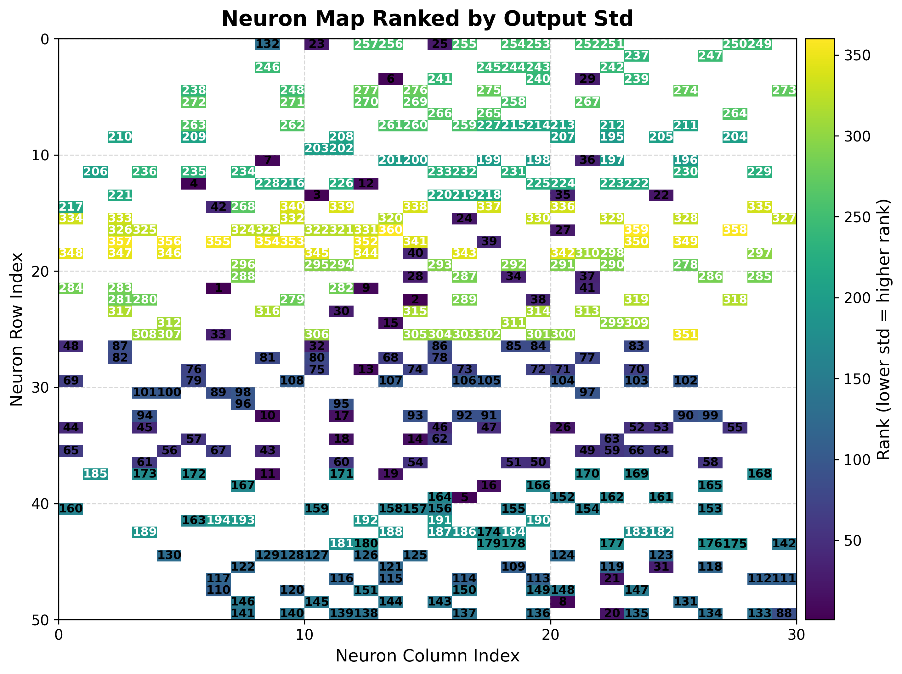
Ranks neurons by target standard deviation (rank 1 = lowest spread = most reliable), giving a quick shortlist of neurons to trust for prediction.
7. Clustering maps & diagnostics¶
Beyond a single cluster assignment, TorchSOM ships diagnostics for model selection
and objective algorithm comparison. Clustering is computed by
cluster() and visualized by the methods below. See the
Clustering guide for the full workflow.
Cluster map¶
cluster_result = som.cluster(
method="hdbscan", # "kmeans", "gmm", or "hdbscan"
feature_space="weights", # "weights", "positions", or "combined"
)
viz.plot_cluster_map(cluster_result=cluster_result)

Elbow analysis¶
Tracks within-cluster dispersion as \(k\) grows; the “elbow” marks the point of diminishing returns — a common heuristic for choosing \(k\) for K-Means or GMM.
viz.plot_elbow_analysis(max_k=10, feature_space="weights")
{kind=link}
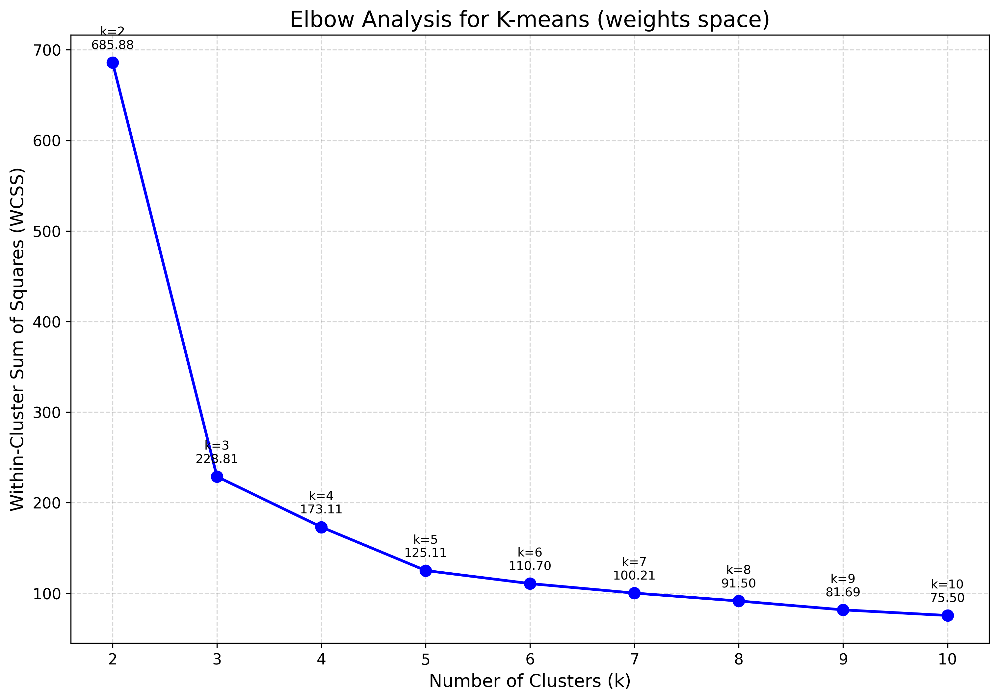
Silhouette analysis¶
Measures how well each point fits its cluster versus the nearest alternative (coefficient in \([-1, 1]\), higher is better).
viz.plot_silhouette_analysis(cluster_result=cluster_result)
{kind=link}
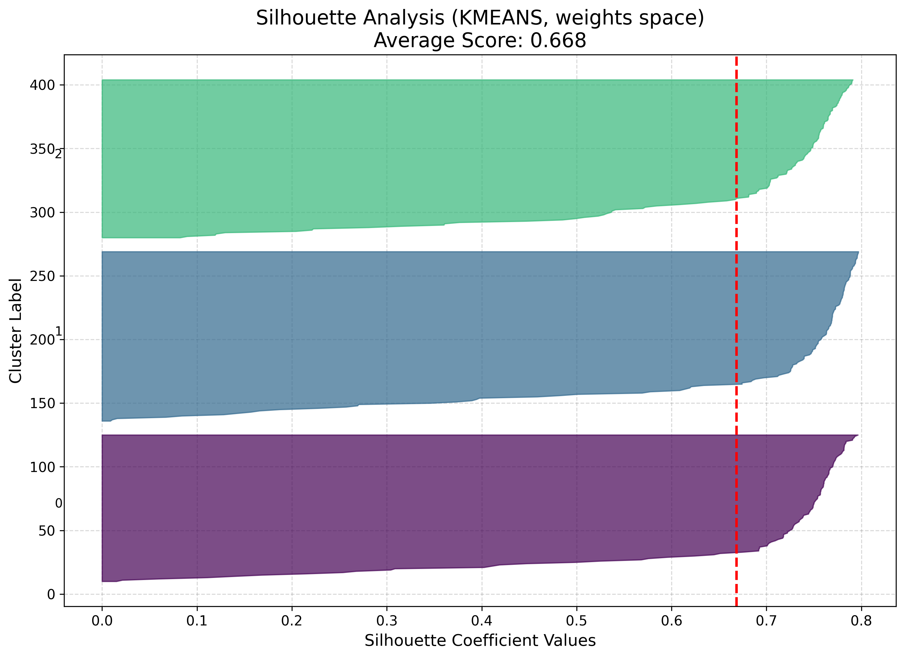
Algorithm comparison¶
Evaluates several algorithms side by side with standardized metrics, so the choice of method is data-driven rather than visual.
results = [
som.cluster(method=m, feature_space="weights")
for m in ("kmeans", "gmm", "hdbscan")
]
viz.plot_cluster_quality_comparison(results_list=results)
{kind=link}
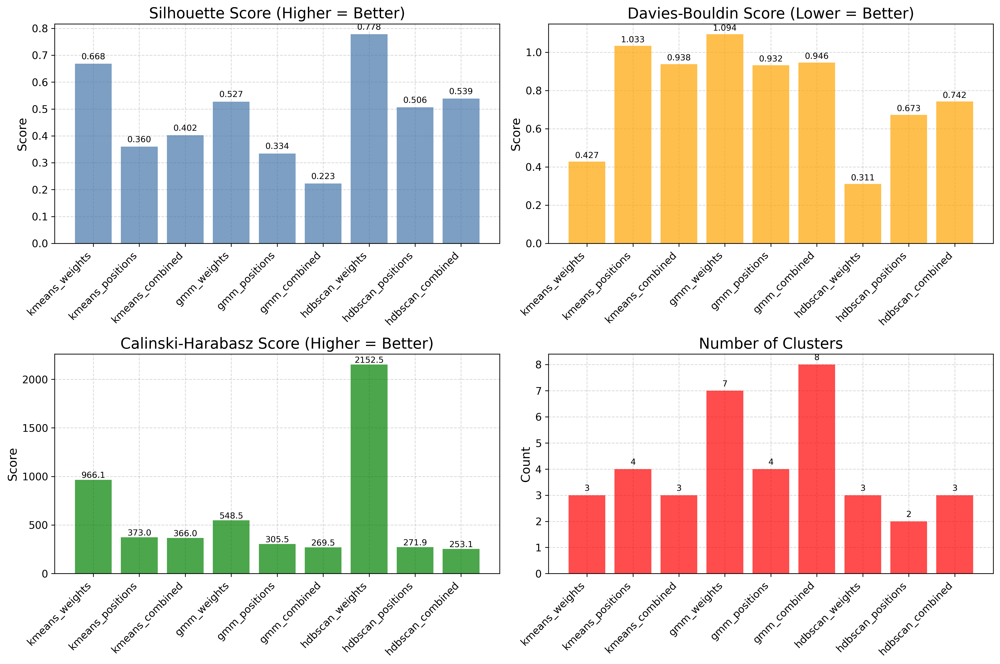
Generating everything at once¶
plot_all() produces the full set in one
call. It needs the pre-computed bmus_map:
viz.plot_all(
quantization_errors=q_errors,
topographic_errors=t_errors,
bmus_data_map=bmus_map,
data=features,
target=targets,
component_names=feature_names,
save_path="som_results",
)
Toggle individual plots with the boolean flags (training_errors, distance_map,
hit_map, score_map, rank_map, metric_map, component_planes).
Hexagonal topology¶
Every plot above works unchanged on a hexagonal map — build the SOM with
topology="hexagonal" and the same visualizer renders hexagon cells instead of
squares. For example, the iris U-matrix and a clustering result on a hexagonal grid:
{kind=link}
{kind=link}
Per-neuron reliability, in context¶
The score and rank maps quantify which neurons are trustworthy, not just whether the map as a whole is well organized. Lower scores correspond to stable, well-supported neurons; higher scores flag regions with poor generalization or sensitivity to outliers. Together, the seven visualization types make TorchSOM a systematic framework for inspecting self-organizing models across supervised and unsupervised regimes — training diagnostics, data distribution, feature interpretation, supervised target landscapes, and clustering model selection.
Next steps¶
Clustering — the full clustering workflow and diagnostics
Tutorials — end-to-end worked examples that produce these figures
Visualization API — complete visualization API reference
Troubleshooting — fixing blank cells, memory, and topology issues